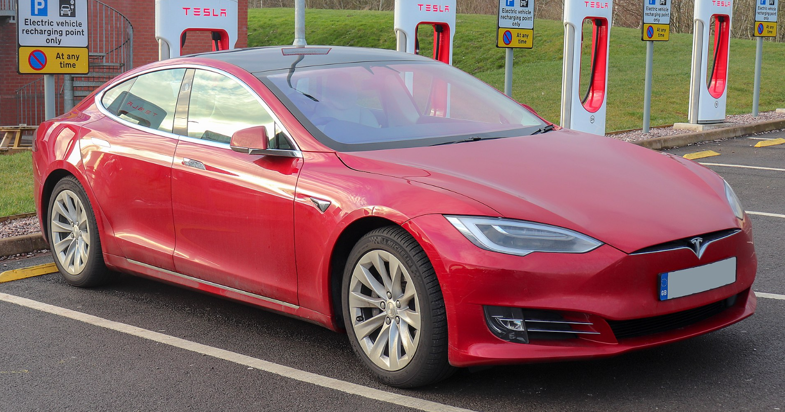

Tesla Model S არის ბატარეით აღჭურვილი ელექტრო, ოთხკარიანი სრული ზომის მანქანა, რომელიც წარმოებულია ამერიკული ავტომწარმოებელი Tesla-ს მიერ 2012 წლიდან. ავტომწარმოებლის ყველაზე ხანგრძლივ წარმოებულ მოდელს და მეორე მანქანას, კრიტიკოსებმა Model S-ს უწოდეს ერთ-ერთი ყველაზე მნიშვნელოვანი და გავლენიანი ელექტრო. მანქანები ინდუსტრიაში. ტესლამ Model S-ის შემუშავება დაახლოებით 2007 წელს დაიწყო კოდური სახელწოდებით "WhiteStar". თავდაპირველად, ჰენრიკ ფისკერი, რომელიც ცნობილია Aston Martin-თან მუშაობით, დაინიშნა WhiteStar პროექტის მთავარ დიზაინერად, მაგრამ Tesla-ს აღმასრულებელ დირექტორთან, ელონ მასკთან კამათის შემდეგ, ფისკერი შეცვალა ფრანც ფონ ჰოლცჰაუზენმა. 2008 წლისთვის ფონ ჰოლცჰაუზენმა დააპროექტა ის, რაც გახდებოდა წარმოების Model S-ის ექსტერიერი. ტესლამ წარმოადგინა მანქანის პროტოტიპი 2009 წლის მარტში, კალიფორნიის ქალაქ ჰოთორნში. Model S-ის წარმოებისთვის Tesla-მ შეიძინა ობიექტი ფრემონტში, კალიფორნია, რომელიც ადრე General Motors-ისა და Toyota-ს მფლობელობაში იყო. მანქანის სერიული წარმოება ოფიციალურად დაიწყო 2012 წლის ივნისში ტესლა ფრემონტის ქარხნის სახელით ცნობილი. Model S-ის ყველა ვერსია აღჭურვილია ერთსიჩქარიანი ტრანსმისიით. მანქანა თავდაპირველად იყენებდა ალტერნატიული დენის ინდუქციურ ძრავას, მაგრამ 2019 წელს ტესლამ ის ჩაანაცვლა მუდმივი მაგნიტის სინქრონული უხერხულობის ერთეულით. ძირითადად ალუმინისგან აგებული Model S იზიარებს მისი კომპონენტების 30 პროცენტს Model X-თან - კროსოვერი SUV, რომელიც დაინერგა 2015 წელს. მისი წარმოების მსვლელობისას მან განიცადა რამდენიმე განახლება, ყველაზე გამორჩეული 2016 და 2021 წლებში. ეს განახლებები, როგორც წესი, მოიცავდა ძრავის მოდიფიკაციას, როგორიცაა სიმძლავრის ან ბრუნვის ცვლილებები, ისევე როგორც გარე ელემენტების შესწორება. და განახლებული ინტერიერის მახასიათებლები. ერთ-ერთი ასეთი ცვლილება მოიცავდა Tesla Autopilot-ის დანერგვას - ავტომობილის ნაწილობრივი ავტომატიზაციის მოწინავე მძღოლის დახმარების სისტემა - რომელიც გამოვიდა 2015 წელს. Model S-ის დასატენად Tesla ამუშავებს სწრაფი დამუხტვის სადგურების ქსელს.
 back